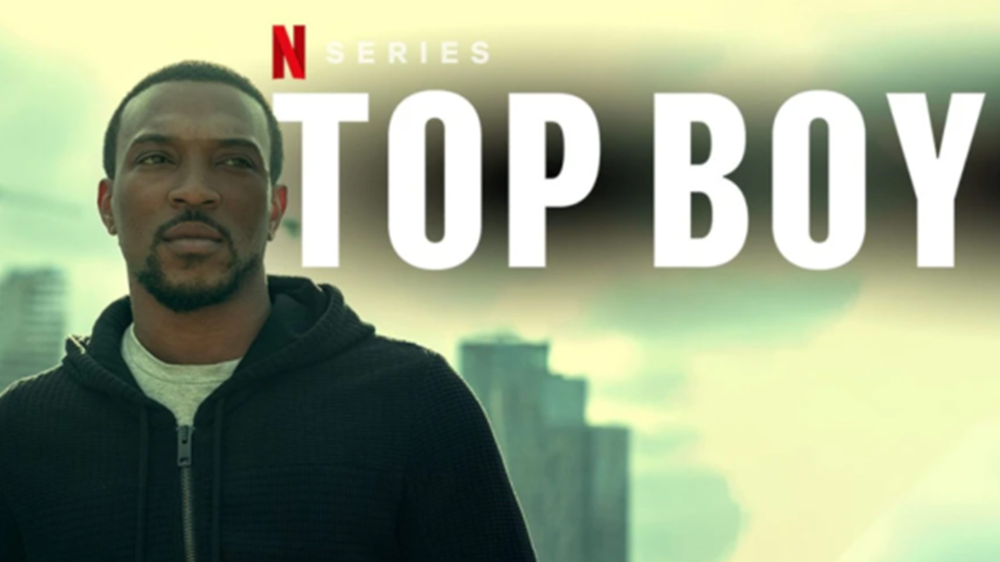
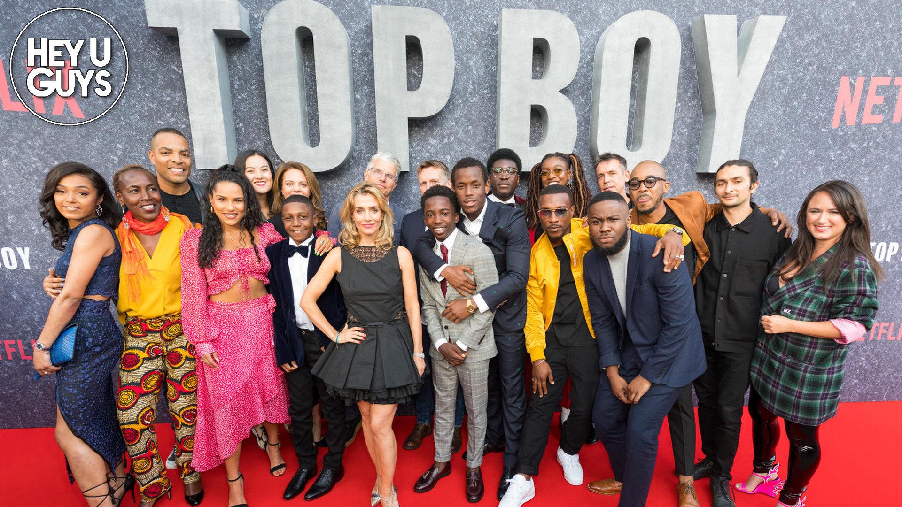

"Where I come from life is a risk. You either step up and take your chances when they come, if not you ain't going nowhere"
Plot
"Top Boy" follows the lives of residents in the fictional Summerhouse estate in Hackney, East London, as they navigate the complexities of drug dealing, gang violence, and survival. The series focuses on the rise and fall of various characters within the drug trade and the impact it has on their lives and community.

Main Actors
Ashley Walters as Dushane Hill
Kane Robinson as Sully
Micheal Ward as Jamie
Shone Romulus as Dris
Little Simz as Shelly
Malcolm Kamulete as Ra'Nell
Becky as Adwoa Aboah
Giacomo Mancini as Gem
Ashley Thomas as Jermaine Newton
Letitia Wright as Chantelle
Lisa Dwan as Lizzie
David Omoregie as Modie
Hope Ikpoku Jr. as Aaron
Saffron Hocking as Lauryn
Araloyin Oshunremi as Stefan
Kadeem Ramsay as Kit
Jasmine Jobson as Jaq

Actors Ranked (Opinion Based)
Araloyin Oshunremi as Stefan
Kadeem Ramsay as Kit
Micheal Ward as Jamie
Jasmine Jobson as Jaq
Ashley Walters as Dushane Hill
Kane Robinson as Sully
Little Simz as Shelly
Becky as Adwoa Aboah
Shone Romulus as Dris
Saffron Hocking as Lauryn
Hope Ikpoku Jr. as Aaron
David Omoregie as Modie
Letitia Wright as Chantelle
Malcolm Kamulete as Ra'Nell
Lisa Dwan as Lizzie
Ashley Thomas as Jermaine Newton
Giacomo Mancini as Gem
Season Summaries
Season 1: The first season introduces viewers to Dushane and Sully, two friends navigating the drug trade in Summerhouse estate. Dushane aims to become the top drug dealer in the area, while Sully is his loyal but hot-headed partner. Their plans are threatened by rival dealers and internal conflicts. The season explores their rise to power, the challenges they face, and the impact of their decisions on their community.
Season 2: In the second season, Dushane and Sully's reign is challenged by new rivals, including a ruthless gang leader named Vincent. As tensions escalate, alliances are tested, and betrayals abound. Meanwhile, other characters in the estate, such as Ra'Nell, struggle to navigate the dangerous environment and protect their loved ones.
Season 3: After a hiatus, "Top Boy" returns with a new season focusing on Dushane's return to the Summerhouse estate after living abroad. He seeks to reclaim his position of power but faces formidable adversaries, including Jamie, a young and ambitious drug dealer. The season explores themes of redemption, loyalty, and the consequences of past actions as old and new conflicts emerge.
Season 4: The latest season continues to delve into the complex dynamics of the drug trade in Summerhouse estate. Dushane and Sully find themselves facing new challenges as they navigate shifting alliances, internal strife, and external threats. Meanwhile, Jamie consolidates his power and poses a significant threat to their dominance. The season further explores the impact of the drug trade on the community and the personal struggles of the characters involved.
Season 5: of Top Boy on Netflix centers on grief and the tension between drug gangs and those trying to live honest lives. The season begins with a recap of Jamie's death and the aftermath of Dushane discovering something. Sully and Dushane's unstable friendship is explored, as are new shared problems that threaten everything they've built
Summary
Top Boy is one of the best shows I’ve ever watched. The way they immerse you in this fictional story is incredible, they make you feel what the characters feel. Even though this story is fictional, they make you connect with these characters like they were your close friends. Not only this, but they constantly do things that you’ll never even think of to further enrich and complicate the plot line of the series.
Here's a page where you can learn more about top boy Top Boy Forum